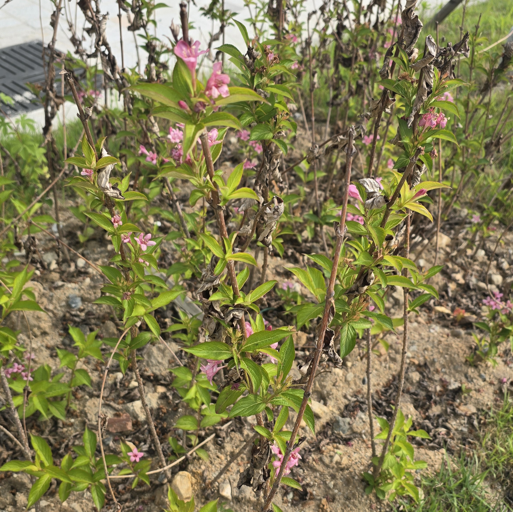

붉은병꽃나무

-붉은병꽃나무
붉은병꽃나무(학명: Weigela florida)는 우리나라 산지에서 흔히 자라는 인동과의 낙엽 활엽 관목입니다. 봄에서 여름으로 넘어가는 5~6월에 병 모양을 닮은 붉은색 꽃을 무리 지어 피우는 것이 특징입니다. 꽃이 처음 필 때는 은은한 녹색을 띤 흰색이나 노란색이었다가 점차 붉은색으로 변해, 한 나무에서 다양한 색의 꽃을 동시에 볼 수 있어 정원수나 조경용으로 인기가 높습니다.
돌아가기